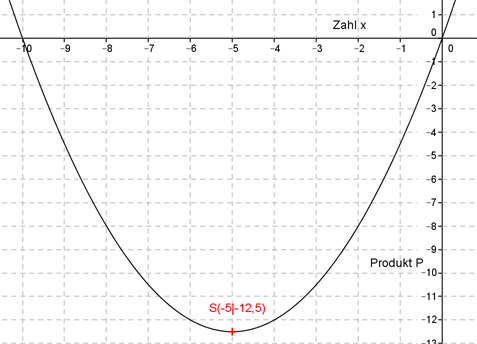

Aufgabe 111 Für welche Zahl ist das Produkt aus ihrer Hälfte und der um 10 größeren Zahl am kleinsten? Die Zahl sei x x Die Hälfte ist --- 2 um 10 vergrößert ist x + 10 x P(x) = --- (x + 10) 2 x² P(x) = ---- + 5x 2 Dies ist die Funktionsgleichung einer nach oben geöffneten, gestauchten Parabel, deren tiefster Punkt der Scheitelpunkt ist. x² P(x) = ---- + 5x |*2 2 2 * P(x) = x² + 10x Quadratische Ergänzung: 2 * P(x) = x² + 10x + 25 - 25 mit x² + 10x + 25 = (x + 5)2 2 * P(x) = (x + 5)2 - 25 |:2 P(x) = 0,5(x + 5)2 - 12,5 Scheitelpunkt abgelesen: S(-5|-12,5) Die Scheitelpunktkoordinaten bedeuten: Die Zahl ist x = -5 und das kleinste Produkt P(-5) = 0,5 * (-5) * (-5 + 10) = -2,5 * (-5) = -12,5 